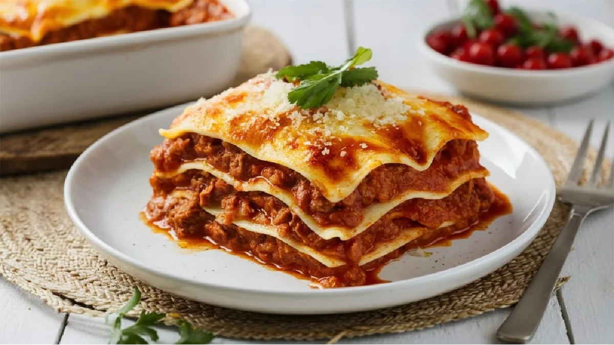

Lasanha

Descrição
Esta lasanha caseira é uma receita tradicional italiana, feita com camadas de massa, carne e molho bechamel.
Perfeita para almoços de família ou ocasiões especiais, é um prato que agrada a todos.
Ingredientes
- Massa para lasanha
- Carne picada
- Molho de tomate
- Molho bechamel
- Queijo ralado
- Sal, pimenta e ervas a gosto
Passos
- Pré-aquecer o forno a 180°C.
- Refogar a carne com o molho de tomate.
- Num tabuleiro, fazer camadas alternadas de massa, carne e molho bechamel.
- Cobrir com queijo ralado e levar ao forno por 30 minutos.
Voltar ao Início